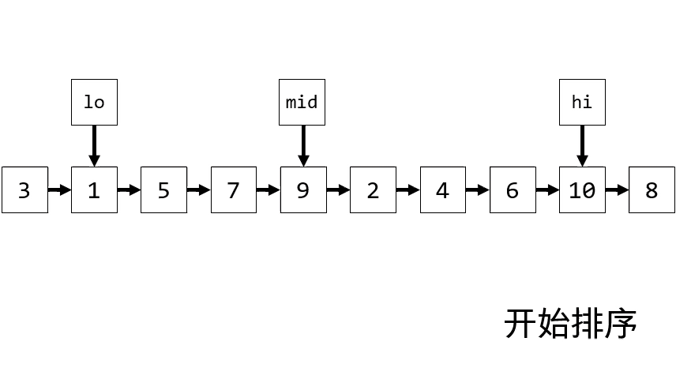
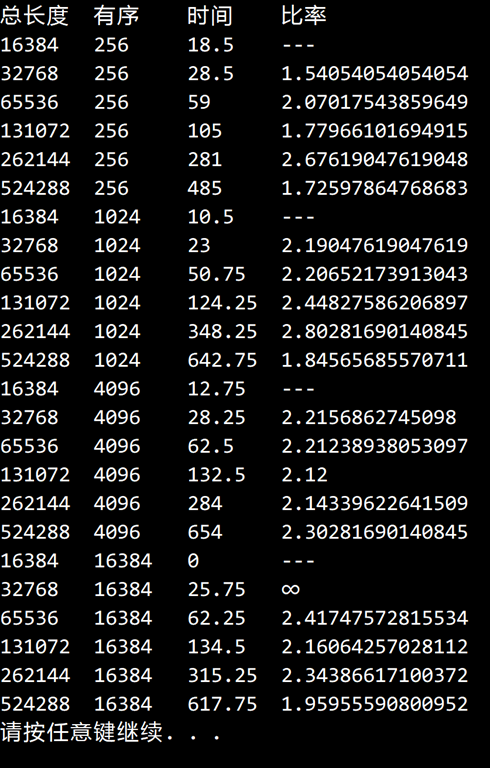

© 2019 《算法（第四版）》C# 题解 | Provided By 沈星繁
搜索解答
目前已完成到 2.5
2.2.17
上次更新：2019-02-11
题目
2.2.17 链表排序。 实现对链表的自然排序 （这是将链表排序的最好方法， 因为它不需要额外的空间且运行时间是线性对数级别的）。
解答
排序方式和 2.2.16 十分类似，不再赘述，这里介绍一下归并方法。  如 gif 图所示，先把要归并的两个链表拆出来，随后确定表头位置，然后进行归并即可。 归并结束后返回 first。
结果分析如下图所示：  随着有序部分的增加，对于相同大小的数组自然归并排序的耗时会缩短。 对于有序部分相同的情况，随着数组大小的倍增，耗时呈现了O(nlogn)的趋势。
代码
using System;
using System.Diagnostics;
using Merge;
namespace _2._2._17
{
/// <summary>
/// 自然的归并排序。
/// </summary>
public class MergeSortNatural : BaseSort
{
/// <summary>
/// 默认构造函数。
/// </summary>
public MergeSortNatural() { }
/// <summary>
/// 利用自然的归并排序进行自底向上的排序。
/// </summary>
/// <typeparam name="T">用于排序的元素类型。</typeparam>
/// <param name="a">需要排序的数组。</param>
public override void Sort<T>(T[] a)
{
T[] aux = new T[a.Length];
while (true)
{
// 找到第一个块
int lo = 0;
int mid = FindBlock(lo, a) - 1;
if (mid == a.Length - 1)
break;
while (mid < a.Length - 1)
{
int hi = FindBlock(mid + 1, a) + mid;
Merge(lo, mid, hi, a, aux);
lo = hi + 1;
mid = FindBlock(lo, a) + lo;
}
}
Debug.Assert(IsSorted(a));
}
/// <summary>
/// 利用自然的归并排序将链表排序。
/// </summary>
/// <typeparam name="T">链表元素类型。</typeparam>
/// <param name="a">等待排序的链表。</param>
public void Sort<T>(LinkedList<T> a) where T : IComparable<T>
{
while (true)
{
// 找到第一个块
Node<T> lo = a.GetFirst();
Node<T> mid = FindBlock(lo);
if (mid.next == null)
break;
while (mid.next != null)
{
Node<T> hi = FindBlock(mid.next);
if (lo == a.GetFirst())
a.SetFirst(Merge(lo, mid, hi));
else
lo.next = Merge(lo.next, mid, hi);
// 跳到表尾
if (Less(hi.item, mid.item))
lo = mid;
else
lo = hi;
if (lo.next != null)
mid = FindBlock(lo.next);
}
}
}
/// <summary>
/// 将两个块归并。
/// </summary>
/// <typeparam name="T">数组的元素类型。</typeparam>
/// <param name="lo">第一个块的开始下标。</param>
/// <param name="mid">第一个块的结束下标（第二个块的开始下标 - 1）。</param>
/// <param name="hi">第二个块的结束下标。</param>
/// <param name="a">需要归并的数组。</param>
/// <param name="aux">辅助数组。</param>
private void Merge<T>(int lo, int mid, int hi, T[] a, T[] aux) where T : IComparable<T>
{
for (int k = lo; k <= hi; k++)
{
aux[k] = a[k];
}
int i = lo, j = mid + 1;
for (int k = lo; k <= hi; k++)
{
if (i > mid)
{
a[k] = aux[j];
j++;
}
else if (j > hi)
{
a[k] = aux[i];
i++;
}
else if (Less(aux[j], aux[i]))
{
a[k] = aux[j];
j++;
}
else
{
a[k] = aux[i];
i++;
}
}
}
/// <summary>
/// 将两个有序链表块归并，返回新的表头。
/// </summary>
/// <typeparam name="T">链表元素类型。</typeparam>
/// <param name="lo">第一个有序块起点。</param>
/// <param name="mid">第一个有序块终点（第二个有序块起点的前驱）。</param>
/// <param name="hi">第二个有序块的终点。</param>
/// <returns>新的表头。</returns>
private Node<T> Merge<T>(Node<T> lo, Node<T> mid, Node<T> hi) where T : IComparable<T>
{
Node<T> after = hi.next; // 要合并的两个块之后的元素
Node<T> first = null;
Node<T> i = lo; // 链表1
Node<T> j = mid.next; // 链表2
// 切割链表
mid.next = null;
hi.next = null;
Node<T> current = null;
// 决定新的表头
if (Less(i.item, j.item))
{
current = i;
i = i.next;
}
else
{
current = j;
j = j.next;
}
first = current;
// 归并表
while (i != null && j != null)
{
if (Less(i.item, j.item))
{
current.next = i;
i = i.next;
current = current.next;
}
else
{
current.next = j;
j = j.next;
current = current.next;
}
}
if (i == null)
current.next = j;
else
current.next = i;
// 连接表尾（链表 1 的尾部或者链表 2 的尾部）
if (mid.next == null)
mid.next = after;
else
hi.next = after;
return first;
}
/// <summary>
/// 获取下一个有序块。
/// </summary>
/// <typeparam name="T">数组元素类型。</typeparam>
/// <param name="lo">查找起点。</param>
/// <param name="a">用于查找的数组。</param>
/// <returns>块的大小。</returns>
private int FindBlock<T>(int lo, T[] a) where T : IComparable<T>
{
int size = 1;
for (int i = lo; i < a.Length - 1; i++)
{
if (Less(a[i], a[i + 1]) || a[i].Equals(a[i + 1]))
size++;
else
break;
}
return size;
}
/// <summary>
/// 获取链表的下一个有序块。
/// </summary>
/// <typeparam name="T">链表的元素类型。</typeparam>
/// <param name="lo">查找的起始结点。</param>
/// <returns>有序块的最后一个元素结点。</returns>
private Node<T> FindBlock<T>(Node<T> lo) where T : IComparable<T>
{
Node<T> hi = lo;
while (hi.next != null)
{
if (Less(hi.item, hi.next.item) || hi.item.Equals(hi.next.item))
hi = hi.next;
else
break;
}
return hi;
}
}
}